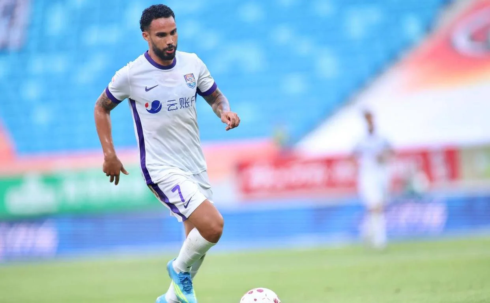
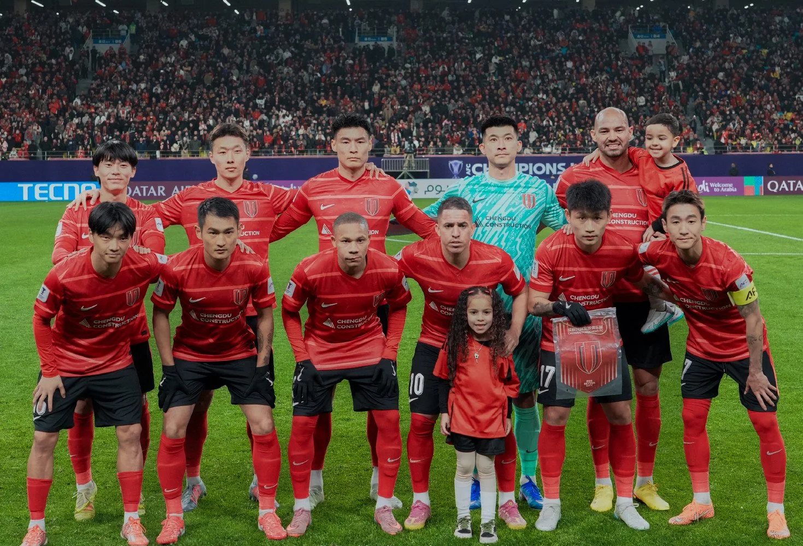
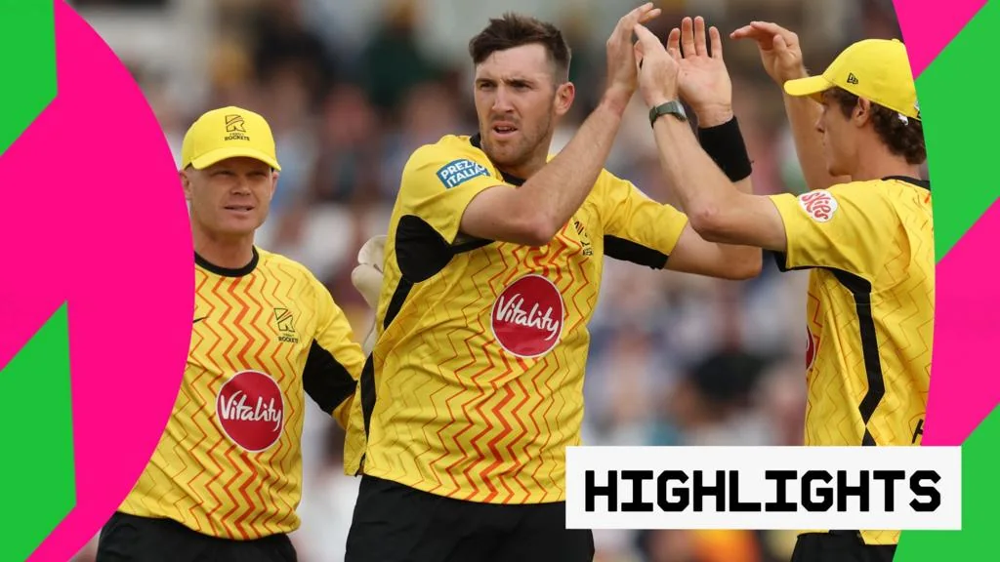
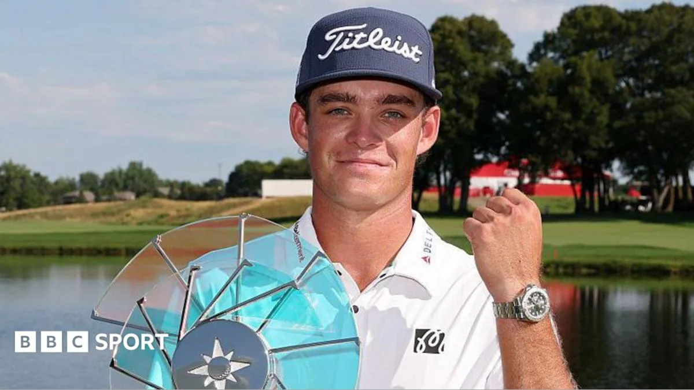

01
武汉三镇主场力克重庆铜梁龙
中超第20轮，武汉三镇在主场战胜重庆铜梁龙，拿下关键三分。
据新浪财经报道，中超联赛第20轮，武汉三镇在主场迎战重庆铜梁龙，最终以胜利告终。比赛开始后，武汉三镇迅速进入状态，利用主场优势掌控节奏。上半场通过一次快速反击打破僵局，随后稳固防守，将领先保持到终场。重庆铜梁龙虽在末段加强攻势，但未能改写比分。这场胜利让武汉三镇在积分榜上稳居中游，而重庆队则继续为保级而战。从战术角度看，武汉三镇本场采用了稳守反击的策略，在控球率不占优的情况下，依靠高效的反击制造威胁。重庆铜梁龙则暴露出进攻手段单一的问题，面对密集防守时缺乏有效的渗透办法。对于普通球迷来说，关注主队保级形势时，可以留意球队的防守反击效率，这往往是中下游球队拿分的关键。此外，业余球队在训练中也可以模仿这种战术，先巩固防守再寻找反击机会，避免盲目压上导致失球。这场比赛也提醒我们，主场氛围对球员心理有积极影响，业余比赛时不妨组织亲友助威，提升士气。
伊恩的观察
对于普通球迷，关注主队保级形势时，可以留意球队的防守反击效率，这往往是中下游球队拿分的关键。
02
天津津门虎三连胜，于根伟带队创佳绩
52岁主帅于根伟率天津津门虎击败青岛海牛，迎来中超三连胜。

手机新浪网消息，天津津门虎再创佳绩，在相关数量岁主帅于根伟的带领下，击败青岛海牛，迎来中超三连胜。比赛中，天津队展现出良好的战术执行力，前场配合默契，多次制造威胁。于根伟的临场调整也起到关键作用，下半场通过换人加强进攻，最终锁定胜局。这波连胜让天津队排名大幅提升，球队士气正旺。从比赛过程来看，天津津门虎在开场阶段就积极拼抢，通过高位压迫迫使青岛海牛出现失误，并迅速转化为进球。下半场青岛队试图反扑，但于根伟及时换上防守型中场稳固阵型，同时利用速度型前锋打反击，最终扩大比分。于根伟作为本土教练的成功，说明经验丰富的教练能有效提升球队凝聚力。业余球队可以借鉴其注重团队配合和临场应变的管理思路，比如在训练中强调位置轮换和战术纪律，比赛中根据对手调整阵型。对于普通运动爱好者，这波连胜也展示了坚持和调整的重要性——即使赛季初表现不佳，通过持续努力也能扭转局面。
伊恩的观察
于根伟作为本土教练的成功，说明经验丰富的教练能有效提升球队凝聚力。业余球队可以借鉴其注重团队配合和临场应变的管理思路。
03
中超最新排名：大连英博滑至第4，成都蓉城优势扩大
成都蓉城战平北京国安后，积分榜优势扩大；大连英博少赛一轮跌至第4。

综合新浪体育和央视体育报道，中超第20轮后，积分榜出现变化。成都蓉城2-2战平北京国安，虽未取胜，但凭借此前积累的优势，仍扩大了对追赶者的领先。大连英博因少赛一轮，排名滑至第4。本轮多场比赛结果影响争冠和保级格局，后续赛程将更为关键。成都蓉城与北京国安的比赛堪称本轮焦点战，双方大打对攻，最终握手言和。成都蓉城在两次落后的情况下两次扳平，展现了顽强的斗志。而大连英博虽然少赛一场，但竞争对手纷纷取胜，导致其排名下滑，这提醒球队在补赛中必须全力争胜。对于普通球迷，积分榜的变化提醒我们，赛程密集时，轮换和体能管理至关重要。业余跑者或健身者也可参照此原则，合理安排训练与恢复，避免过度疲劳导致伤病。此外，成都蓉城在逆境中不放弃的精神也值得学习——在健身或减肥过程中，遇到平台期时不妨调整策略，保持耐心，最终会看到进步。
伊恩的观察
积分榜的变化提醒我们，赛程密集时，轮换和体能管理至关重要。业余跑者或健身者也可参照此原则，合理安排训练与恢复。
04
The Hundred：Trent Rockets击败London Spirit，兄弟对决成亮点
Craig Overton在与弟弟Jamie Overton的对决中表现出色，帮助Trent Rockets获胜。

BBC报道，在The Hundred板球赛事中，Trent Rockets以4 wickets击败London Spirit。比赛中，Craig Overton发挥出色，不仅投球限制对手，还在关键时刻击球得分。有趣的是，他的弟弟Jamie Overton效力于London Spirit，兄弟同场竞技成为焦点。最终Craig所在的Rockets笑到最后。从技术层面看，Craig Overton的投球以精准著称，本场他多次在关键局面下破坏对手的击球节奏，而弟弟Jamie则在击球时试图强攻，但被哥哥的战术克制。兄弟对决增加了比赛的戏剧性，也让观众感受到竞技体育中亲情与胜负的微妙平衡。对于普通运动爱好者，家庭或朋友间的良性竞争可以提升运动乐趣，不妨约上亲友一起锻炼，比如周末组织一场板球或棒球友谊赛，既能增进感情，又能提高运动水平。此外，板球中的策略博弈也值得借鉴——在团队运动中，了解对手特点并制定针对性战术，往往能事半功倍。
伊恩的观察
板球中的兄弟对决增加了比赛戏剧性。对于普通运动爱好者，家庭或朋友间的良性竞争可以提升运动乐趣，不妨约上亲友一起锻炼。
05
3M公开赛：新秀Koivun力压Scheffler夺首冠
高尔夫新秀Jackson Koivun在3M公开赛上顶住压力，击败世界第一Scottie Scheffler，赢得个人首个PGA冠军。

BBC Sport报道，在3M公开赛上，新秀Jackson Koivun展现了惊人的心理素质，在最后一轮中保持稳定，最终击败世界排名第一的Scottie Scheffler夺冠。Koivun在决赛轮中多次关键推杆入洞，而Scheffler虽奋力追赶，但未能反超。这是Koivun的PGA首胜，也是本赛季最大的冷门之一。从比赛过程看，Koivun在前三轮就建立了领先优势，最后一轮面对Scheffler的冲击，他始终专注于自己的节奏，没有因对手的强势而慌乱。尤其是在第18洞，他顶住压力推进了制胜推杆。Scheffler虽然整体表现稳定，但推杆手感稍逊，错失了几次追平机会。Koivun的胜利证明，在竞技体育中，心理素质与技术水平同样重要。业余高尔夫爱好者可以练习在压力下专注每一杆，比如设定小目标来提升抗压能力，或者模拟比赛环境进行训练。对于普通运动者，这个故事也告诉我们，不要因为对手强大而畏惧，专注于自身表现，就有可能创造奇迹。
伊恩的观察
Koivun的胜利证明，在竞技体育中，心理素质与技术水平同样重要。业余高尔夫爱好者可以练习在压力下专注每一杆，比如设定小目标来提升抗压能力。
无障碍文字记录
伊恩 各位好，我是伊恩。今天是2026年7月27日，欢迎收听「伊恩每日·运动」。今天的内容很丰富：中超多场激战，天津津门虎52岁主帅于根伟带队三连胜；板球The Hundred上演兄弟对决；高尔夫新秀Jackson Koivun在3M公开赛上击败世界第一舍夫勒，拿下生涯首胜。咱们一个一个聊。先从中超说起。
伊恩 先说武汉三镇主场战胜重庆铜梁龙。这场比赛的关键节点在下半场第60分钟，武汉队利用一次快速反击打破僵局。当时重庆队中场传球失误，武汉队断球后三脚传递就撕开了防线，外援前锋单刀赴会，冷静推射远角得分。重庆队丢球后心态有些急躁，大举压上试图扳平，结果后防空虚，第78分钟又被武汉队抓住反击机会，边路传中后头球破门，比分锁定在2:0。从战术上看，武汉队本场防守非常紧凑，中场拦截成功率高，重庆队很难组织起有效进攻。这场胜利让武汉三镇在积分榜上稳住了中游位置，而重庆铜梁龙则继续为保级而战。
你可能想问，为什么重庆队会频繁出现传球失误？其实这跟他们的中场组织有关。重庆队本赛季中场控制力偏弱，面对高压逼抢时出球点少，容易陷入被动。而武汉队正是抓住了这一点，通过前场紧逼迫使对手犯错。这种战术对普通人的启示是：在业余比赛中，如果你体能占优，不妨多采用高位压迫，往往能制造对手失误。但代价是消耗大，需要全队统一行动，否则容易被反打。
另外，这场比赛也反映出中超中下游球队的典型问题：攻守失衡。重庆队丢球后急于扳平，反而给了对手更多机会。对于业余球队来说，落后时保持阵型比盲目进攻更重要——先稳住防守，再寻找机会，往往比一窝蜂前压更有效。
后续看点：武汉三镇接下来要面对强队，能否延续防守强度是关键；而重庆铜梁龙需要解决中场出球难题，否则保级形势堪忧。对于普通球迷，看这种比赛可以多关注无球跑动和防守站位，这对提升自己的比赛理解很有帮助。
伊恩 今天咱们聊聊中超赛场上一个特别提气的消息：天津津门虎，在52岁的主帅于根伟带领下，主场击败了青岛海牛，拿下了三连胜。这可不是简单的三场胜利，它背后藏着很多值得琢磨的门道。
先还原一下比赛的关键时刻。这场球踢得并不轻松，青岛海牛防守很硬，上半场双方都没能破门。但下半场，于根伟做出了一个大胆的调整——他换上了一名速度型边锋。这个换人，直接改变了比赛的走向。第75分钟，这位替补上场的边锋在右路强行超车，甩开防守球员后送出一记精准的传中，中路包抄的队友抢点破门。1比0，天津队拿下了比赛。
很多球迷可能会问：为什么一个换人能起到这么大作用？其实这背后是于根伟对比赛节奏的精准判断。上半场青岛海牛体能充沛，防守阵型保持得很好，硬打很难奏效。但到了下半场，尤其是70分钟以后，对手的体能开始下降，边后卫的回追速度变慢。这时候换上速度型边锋，就是要抓住这个窗口期，用速度和冲击力撕开防线。于根伟的这次调整，可以说是教科书级别的临场指挥。
说到于根伟，很多老球迷对他并不陌生。作为天津足球的旗帜人物，他球员时代就是球队的进攻核心。转型教练后，他一直在学习、在进步。这次三连胜，不只是运气好，更是他战术思路成熟的表现。他不再只是靠激情和威望带队，而是能根据场上形势做出冷静、有效的决策。这对于本土教练来说，非常难得。
三连胜之后，天津津门虎的积分已经逼近积分榜上半区。对于一支赛季初并不被看好的球队来说，这个成绩含金量很高。球迷们可以期待更多，但也要保持理性。接下来他们还要面对更强的对手，于根伟的战术体系能否持续奏效，年轻球员能否在高压下保持稳定，这些都是考验。
最后，说一点对咱们普通运动爱好者的启发。于根伟的这次换人，其实很像我们平时健身或打球时的策略调整。比如跑步时，如果你一直匀速跑，到后半程可能会觉得吃力。但如果你在中间阶段适当调整节奏，比如加快步频或者改变呼吸方式，往往能突破瓶颈。运动中的“临场调整”，不只是职业教练的事，我们每个人都可以学会观察自己的身体状态，做出更聪明的选择。
好了，今天的分享就到这里。记住，运动不只是拼体力，更是拼脑子。咱们下期见。
伊恩 今天咱们来聊聊中超的最新排名。根据新浪体育的报道，第20轮战罢后，积分榜又有了新变化。成都蓉城在主场2比2战平北京国安，虽然没赢，但他们的领先优势反而扩大了，因为身后的追兵也纷纷丢分。而大连英博因为少赛一轮，直接从第3滑到了第4。
先说说成都蓉城这场球。面对北京国安，蓉城两度领先两度被扳平，最终只拿到1分。但有意思的是，他们的竞争对手——比如上海海港和山东泰山——本轮也没能全取3分。这样一来，蓉城在积分榜上的领先优势反而从2分扩大到了3分。这就像考试，你考了90分，但第二名只考了87分，你的领先优势反而更大了。
大连英博的情况就有点尴尬了。他们本轮轮空，没踢比赛，结果因为其他球队纷纷拿分，直接从第3掉到了第4。这就像你请假没上班，结果同事都签了大单，你的排名自然就下滑了。不过大连英博少赛一轮，如果补赛能赢，他们还有机会回到前三。
很多朋友可能会问：中超的争冠形势到底怎么样？目前来看，成都蓉城、上海海港、山东泰山这几支球队都有机会。蓉城虽然领先，但优势并不大，后面还有十几轮比赛，变数很多。而且蓉城接下来的赛程并不轻松，要连续面对强敌。
对于咱们普通球迷来说，看中超不只是看比分，更要看球队的战术和球员的发挥。比如成都蓉城这场，他们的进攻打得不错，但防守端还是有问题，两次领先都被扳平。这说明球队在领先后的专注度不够，这是他们接下来需要改进的地方。
另外，大连英博的轮空也提醒我们，在联赛中，赛程的密集程度对球队的影响很大。少赛一轮看似占了便宜，但实际上也可能打乱球队的节奏。就像咱们平时健身，如果突然停练一周，再恢复训练时状态反而会下降。
最后，给喜欢踢球的朋友一个建议：看比赛时多关注球队的阵型和跑位，比如蓉城这场用的4-3-3阵型，边路进攻打得很有威胁。你可以试着在野球场上模仿一下，说不定能提升你的进攻效率。
好了，今天就聊到这儿。我是伊恩，咱们明天见。
听众 伊恩，中超争冠这么激烈，成都蓉城最近平局有点多，他们能稳住吗？
伊恩 好问题。成都蓉城最近三场平了两场，确实有点放缓。但你看积分榜，他们领先第二名还有5分，而且国安、泰山这些强队也都在丢分。关键在于成都的防守体系——他们场均失球不到1个，是联赛防守最好的球队之一。只要进攻端能找回状态，冠军希望很大。
伊恩 今天咱们聊一场板球好戏——The Hundred男子赛，特伦特火箭队主场迎战伦敦精神队，最终火箭队以4个三柱门的优势获胜。这场比赛最抓人的不是比分，而是一对亲兄弟的直接对话：火箭队的克雷格·奥弗顿，面对的是效力于伦敦精神队的亲弟弟杰米·奥弗顿。
先还原一下关键节点。比赛进行到中段，伦敦精神队正在追分，杰米·奥弗顿站上击球区。这时火箭队教练果断派上克雷格投球。兄弟对决，全场屏息。克雷格的第一球就精准地打在杰米防守的薄弱区域，迫使弟弟打出高飞球，被外野手稳稳接住——直接出局！克雷格随后又连续拿下两个三柱门，全场贡献3个三柱门，成为火箭队获胜的最大功臣。
赛后克雷格说：“这很特别，但比赛就是比赛。”这句话听着轻描淡写，但背后是职业球员的残酷逻辑：场上没有兄弟，只有对手。这种兄弟对决在板球历史上并不多见，上一次让人印象深刻的是2019年Ashes系列赛中，英格兰队的科里·奥弗顿（也是奥弗顿家族）对阵澳大利亚队的弟弟？不，那是另一个故事了。但克雷格和杰米这场，因为The Hundred赛制的快节奏，更添戏剧性。
说到The Hundred，很多新手可能不熟悉。这是英格兰板球委员会在2021年推出的新赛制，每队只投100个球，比传统T20的120球更短，节奏更快，目的就是吸引年轻观众。每5个球换一次投手，进攻方可以叫“暂停”调整策略，有点像篮球的暂停。这种赛制下，投手的作用被放大，因为球数少，每一个三柱门都价值连城。克雷格·奥弗顿正是抓住了这一点，用精准的投球打乱了对手的节奏。
这场胜利让火箭队排名升至第二，而伦敦精神队则跌出前四。对于普通板球爱好者来说，兄弟对决的看点在于心理博弈：克雷格熟悉弟弟的击球习惯，杰米也知道哥哥的投球套路，但临场发挥才是关键。克雷格赛后透露，他赛前和杰米通过电话，两人约定“场上全力以赴，场下还是兄弟”。这种职业态度值得点赞。
如果你平时也打板球或者玩类似运动，可以学到的点是：面对熟悉的对手，不要过度依赖预判，而是专注于自己的执行。克雷格的成功在于他投球线路的变化——第一球是短球，迫使杰米后退击球；第二球是慢速球，让弟弟提前挥拍；第三球是直线快球，直接打中门柱。这种组合拳，才是职业级的应对。
最后，火箭队下一场将对阵排名第一的南方勇士队，而伦敦精神队则需要调整心态，避免连败。兄弟对决的故事虽然结束了，但The Hundred的悬念还在继续。咱们下期见！
伊恩 最后看高尔夫。3M公开赛，新秀杰克逊·科伊文顶住压力，击败世界第一斯科蒂·舍夫勒，赢得个人首个美巡赛冠军。科伊文在决赛轮打出-5杆，总成绩-18杆，领先舍夫勒1杆。关键在最后两洞：第17洞，舍夫勒抓鸟追平；第18洞，科伊文推进一个6英尺的保帕推，而舍夫勒的鸟推擦洞而过。科伊文说，我告诉自己这只是另一杆，然后推进了。这种心理素质，前途无量。
你可能想问：一个22岁的新秀，凭什么能赢世界第一？首先，科伊文这一周的铁杆非常精准，标准杆上果岭率高达83%，这让他有更多小鸟机会。其次，他的推杆在关键时刻没有掉链子——最后那个6英尺保帕推，很多人会手抖，但他执行得像训练一样。反观舍夫勒，虽然全场抓了7只鸟，但第18洞的推杆线路读得稍微偏了一点，球从洞杯右边滑过。这就是高尔夫：毫厘之间，胜负立判。
对普通人来说，这个故事有什么启发？第一，心理素质是可以训练的。科伊文赛后说，他平时会模拟压力情境，比如在练习果岭上给自己设定“必须推进才能赢”的条件。第二，高尔夫不是比谁失误少，而是比谁在压力下执行得更接近训练水平。你下场打球时，可以试试在每洞最后一推前深呼吸，告诉自己“这只是另一杆”，把注意力放在过程而非结果上。
接下来，科伊文将获得美巡赛两年参赛资格和大师赛等大满贯的邀请。他的短杆和抗压能力已经证明属于顶级，但稳定性还需要时间检验。舍夫勒虽然输了，但状态依然火热，下一场世锦赛他仍是头号热门。对于咱们普通球友，下次在果岭上遇到关键推，不妨学学科伊文：简化想法，相信肌肉记忆。
听众 伊恩，我健身时经常腰疼，是不是动作不对？有什么建议？
伊恩 腰疼很常见，多半是核心力量不足或者动作代偿。比如做深蹲时，如果腹部没收紧，压力就会转移到腰椎。建议你先降低重量，专注于动作质量，可以练平板支撑、鸟狗式来增强核心。另外，练完后用泡沫轴放松一下竖脊肌。如果持续疼痛，一定要看医生。
伊恩 今天几个故事有个共同点：关键时刻的冷静和调整。于根伟的换人、科伊文的保帕推、克雷格·奥弗顿的兄弟对决，都是心理和战术的胜利。中超争冠进入白热化，高尔夫新星崛起，体育的魅力就在这些瞬间。
伊恩 以上就是今天的「伊恩每日·运动」。如果你有想问的，关于比赛、健身或者运动健康，欢迎留言。明天见。